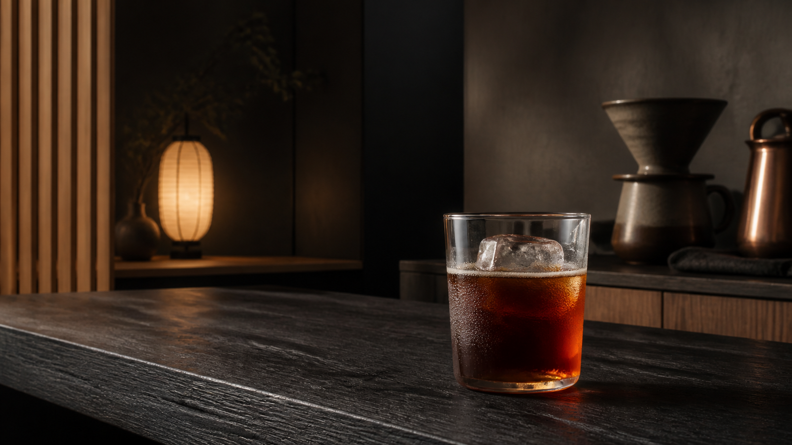
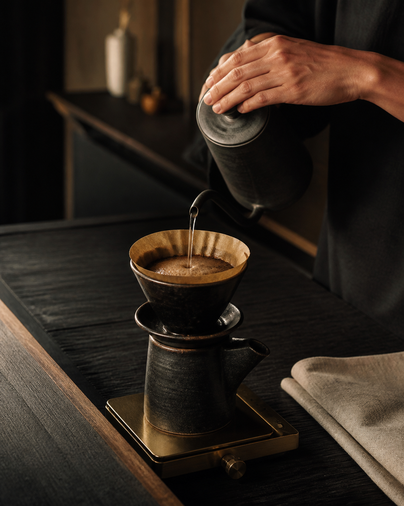

The beauty of pause
A cup is not
something to rush.
KŌRI is shaped by ma — the Japanese idea that space and silence give meaning to everything around them. We roast gently, pour precisely, and leave room for each coffee to speak.
Source-adapted design demo · Original KŌRI project imagery and copy · Menu prices are prototype content

静けさを注ぐ · Kuala Lumpur
Japanese coffee craft, distilled to its quietest form. Seasonal beans, precise pours, and time enough to taste them.
Explore the menuFlash-chilled
single origin
The beauty of pause
KŌRI is shaped by ma — the Japanese idea that space and silence give meaning to everything around them. We roast gently, pour precisely, and leave room for each coffee to speak.

The craft · 所作
Every cup follows a simple rhythm: choose with care, roast with restraint, pour with attention. No performance. Just the quiet confidence of repetition.